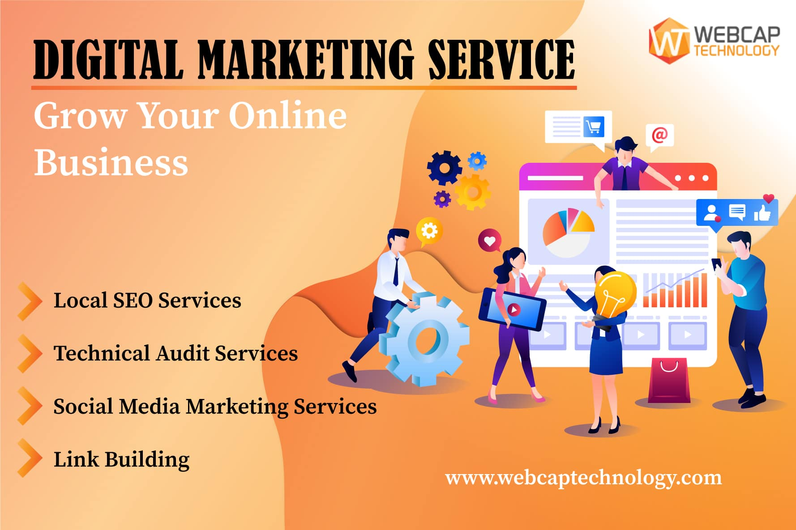

Small Business Website
Services
Service 1:Accounting and Bookkeeping Services
- Small businesses often struggle with managing their finances effectively. Hiring accounting and bookkeeping services can help ensure accurate recording of financial transactions, timely invoicing, proper budgeting, and compliance with tax regulations. These services can also provide valuable insights into the financial health of the business, helping owners make informed decisions and plan for the future.
Service 2:Digital Marketing Services:
- In today's digital age, having a strong online presence is crucial for small businesses to attract customers and compete effectively. Digital marketing services help businesses establish and enhance their online presence through strategies such as search engine optimization (SEO), social media marketing, email marketing, content marketing, and pay-per-click (PPC) advertising. These services can help small businesses reach their target audience, increase brand visibility, generate leads, and ultimately drive sales and revenue growth.

Testimonials
Testimonial 1:
- Their accounting and bookkeeping services have been a game-changer for our small business. With their expertise, we've been able to streamline our financial processes, stay on top of our expenses, and make informed decisions about our budgeting and investments. Their team is professional, reliable, and always goes above and beyond to ensure our financial needs are met. Thanks to [Small Business Name], we now have peace of mind knowing our finances are in good hands."
Testimonial 2:
- digital marketing services have been instrumental in helping us grow our business. Their strategic approach to SEO, social media, and email marketing has significantly increased our online visibility and attracted more customers to our website. The team at [Small Business Name] is creative, responsive, and committed to delivering results. Thanks to their efforts, our business has seen a significant increase in website traffic, leads, and sales. We're thrilled with the results and look forward to continuing our partnership with [Small Business Name] in the future."